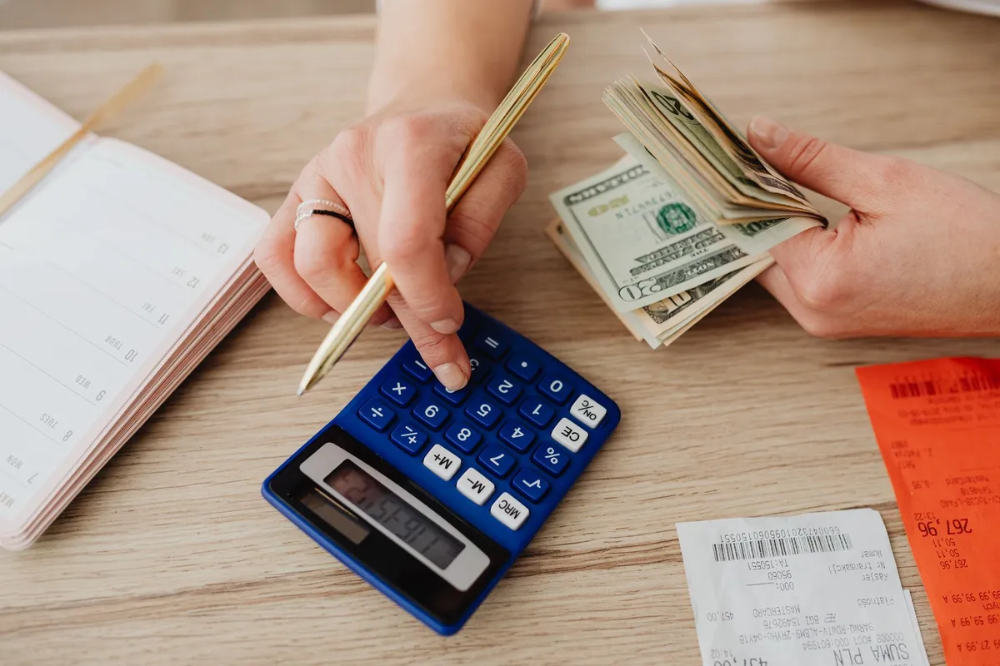

Cardápio digital vale a pena? A conta honesta para restaurante e delivery

Resposta curta: vale a pena quando você já vende pelo WhatsApp ou paga comissão para aplicativo. Não vale quando o problema é falta de cliente e você não pretende divulgar o link. Abaixo, a conta e os casos.
Quando vale a pena
- Você anota pedido no WhatsApp: o cardápio tira a digitação e o erro de anotação.
- Você paga comissão: cada pedido que migra para o próprio canal devolve a comissão para o caixa.
- Seu WhatsApp lota no pico: veja WhatsApp do delivery lotado.
- Você quer vender de novo para quem já comprou: a base de clientes fica com você.
Quando não vale (ainda)
- Você recebe dois ou três pedidos por semana e não vai divulgar o link.
- Seu cardápio muda todo dia e ninguém vai atualizar.
- O plano escolhido cobra comissão alta — aí troca um app por outro.
A conta
| Cenário | Resultado |
|---|---|
| Ticket médio R$45, mensalidade R$97 | 3 pedidos pagam o mês |
| 200 pedidos/mês saindo do app com 18% | R$1.620 de comissão que volta |
| "Peça também" em 1 de cada 5 pedidos (+R$12) | +R$480/mês em 200 pedidos |
Os números são exemplos. Faça a conta com o seu ticket e o seu volume; o detalhamento por modelo de cobrança está em preço de cardápio digital.
Vantagens que não aparecem na conta
- Cozinha recebe pedido legível, sem "letra de garçom".
- Cliente vê foto e adiciona mais coisa sozinho.
- Você sabe o que mais vende e quem sumiu.
Desvantagens reais
- Precisa divulgar: o link não aparece sozinho. Bio, embalagem, QR Code na mesa e saudação do WhatsApp.
- Precisa manter atualizado: preço errado no cardápio é preço errado no pedido.
- Mensalidade existe mesmo no mês fraco.
Como começar sem risco
Escolha um plano sem fidelidade, comece pelos 20 itens que mais vendem e coloque o link na saudação do WhatsApp. Antes de assinar, confira o que um bom cardápio digital deve ter e o checklist de escolha.
Quanto custa no Menuzia
Plano Básico, R$97/mês, sem comissão por pedido e sem fidelidade. Nossa equipe monta o cardápio.
Buscas relacionadas
O que donos de restaurante e delivery pesquisam antes de contratar — cada busca leva para a página que responde a ela:
Perguntas frequentes
Cardápio digital vale a pena para restaurante pequeno?
Vale se você já vende pelo WhatsApp ou paga comissão. Com ticket de R$45, três pedidos pagam a mensalidade do plano Básico do Menuzia.
Cardápio digital traz cliente novo?
Sozinho, não. Ele converte quem já chega até você. Cliente novo vem de divulgação, anúncio e indicação.
Quais as desvantagens do cardápio digital?
Precisa ser divulgado, mantido atualizado e tem mensalidade fixa mesmo em mês fraco.
É melhor que receber pedido pelo WhatsApp?
O WhatsApp continua sendo o canal da conversa; o cardápio monta o pedido sem erro e com taxa e pagamento já resolvidos.
Tem fidelidade no Menuzia?
Não. Você pode cancelar quando quiser.
Fale com um especialista do Menuzia
Sem comissão por pedido e sem fidelidade. Planos a partir de R$97/mês, com configuração feita pela nossa equipe.
Quero conhecer o Menuzia →